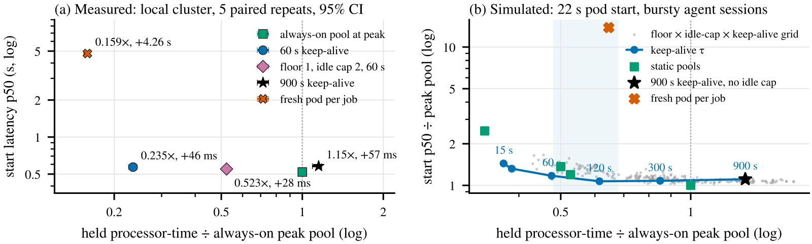
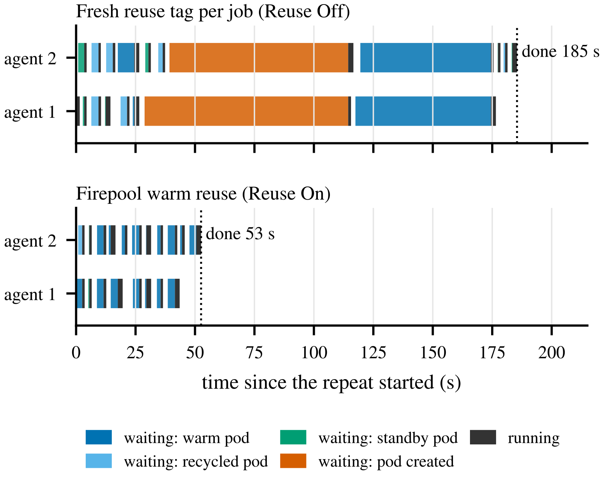
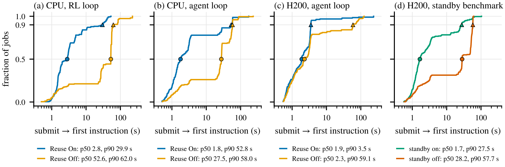
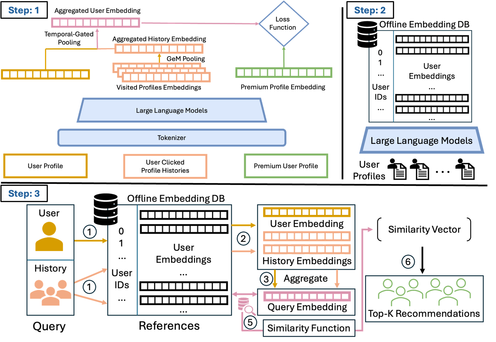
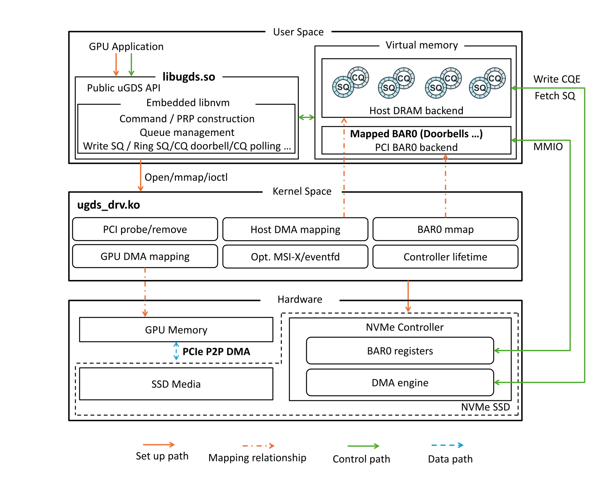

目录 · 7 节
1一个任务从提交到开跑的五步2为什么同一个 pod 能接不同代码的任务3复用 pod 的三条隔离规则4零显存 standby：换 pod 时不再等二十多秒5热 pod 的 GPU 成本和限额6基准里，复用让循环快了 2.2 到 13 倍7任务太长或停顿太久时，热 pod 不划算LinkedIn 给内部 agent 和 RL 任务分配 GPU 的服务 Firepool 说明，几秒钟的 GPU 小任务要提速，办法不在把 pod 启动做快，而在让任务用上已经启动好的 pod，同时别让闲着的 GPU 白花钱，别让上个任务留下的文件和进程漏给下个任务。
代码 agent 的工作方式是改一个文件、在沙箱里跑测试、读结果、再改。RL 训练也类似：trainer 一次发出一批 rollout，给它们打分，更新策略，再发下一批。每次跑测试或跑 rollout 都要一个隔离的环境和一张 GPU，在 Kubernetes 上就是起一个 pod 来跑。以前驱动这些循环的是人，人看完结果再动手，两步之间隔着几分钟。换成程序驱动之后，两步之间只隔几秒，任务成批到达，全天不停。下文一直用一个示意场景：一个代码 agent（叫它 agent-A）修 42 号 bug，要在 GPU 沙箱里跑 4 步，每步跑 2 秒，步与步之间等 LLM 返回下一步操作，停 1 秒。
难就难在，给这 2 秒的活起一个 pod 要二十多秒。在 LinkedIn 的 H200 节点上，就算 12.2 GB 的镜像已经在节点上，从创建 pod 到执行第一条指令的中位时间也有 22.1 秒，p90 是 34.7 秒。其中最大的一块是每个生产 pod 都要跑的平台 init 容器，中位 14 秒，光取凭证就占 5 秒。套到 agent-A 身上（示意）：4 步各起一个 pod，就是 4 × 22 = 88 秒等 pod，4 × 2 = 8 秒干活，3 次停顿共 3 秒，一共 99 秒，真正跑任务的时间不到一成。镜像不在节点上时更慢：一个月里全集群的平均建 pod 时间，按 GPU 规格不同在 1.3 到 7.5 分钟之间。
常见的几种办法，各自只解决这个问题的一部分。把镜像提前缓存到节点上，省的是网络拉取，可上面那 22 秒本来就是镜像已缓存时量的，agent-A 一秒也省不下来。Kueue、Volcano 这类批调度器管排队和配额，但不会在任务之间留下可复用的 pod，agent-A 的 4 步还是各起一个。已有的 warm-pool 控制器（比如 SageMaker 的 Managed Warm Pools）会提前备好 pod，但只给和预备配置相符的请求用；示意里假设 agent-A 要的环境和备好的对不上，它就还得冷启动（从头建 pod）。Ray 集群或静态 worker 池能让 4 步都不用等，代价是 agent-A 每次停顿、夜里没任务时 GPU 都占着。而且在这种常驻 worker 上，一个任务留下的文件和共享内存，下一个任务也可能碰得到。
所以，把启动好的 pod 留着等下一个任务（下文叫热 pod）要真有用，得同时满足三件事：下一个任务确实能用这个 pod，留着的 GPU 花费有上限，复用时上个任务的文件和进程不会漏给别的调用方（提交任务的 agent 或 trainer）。Firepool 是 LinkedIn 内部的一个代理服务，为代码 agent、RL 训练和其他 agentic 研究负载提供 pod，这篇论文讲的就是它怎么分别处理这三件事。在一段 14 小时的生产高峰抽样里，3,206 次 pod 请求有 94.7% 用的是已经启动好的 pod，没有新建。这说明至少在这段高峰负载下，新建 pod 已经成了少数情况。
一个任务从提交到开跑的五步
Firepool 在每个 Kubernetes 集群里部署一个代理服务。agent-A 的第 1 步提交给它的请求大致长这样（示意，字段按论文描述简写）：
sku: h200-1gpu
package: sha256:9f3c… # 修 bug 用的脚本和验证器，4 MB 的 zip
lease_tag: fix-bug-42sku 指硬件池，它定死了 GPU 型号、CPU、内存和基础镜像，这里就是「一张 H200」这一档。package 是代码包。lease_tag 是调用方给这次会话起的标签，下文叫会话标签。调用方是谁不用在请求里填，代理服务从身份 token 里验证出来。
这个请求接下来这样走：
| 步骤 | 输入 | 谁做什么 | 产出 | 任务要等它吗 |
|---|---|---|---|---|
| 1 | 任务请求 | 代理服务校验身份，把任务写进持久 SQL | 一条排队记录 | 要 |
| 2 | 排队记录、内存里的 pod 表 | 调度循环取出任务，在 pod 表里认领一个 pod | agent-A 租到 pod-7（示意的 pod 名） | 要，查表极快 |
| 3 | 代码包 | pod 里的守护进程解压代码、按需装依赖、启动任务 | 任务进程开跑 | 要，中位约 0.4 秒 |
| 4 | 跑完的任务 | 守护进程杀掉任务进程、清空工作目录，确认干净后 pod 留给 agent-A | 下一步可复用的 pod-7 | 下一步要等清理完 |
| 5 | 队列长度和 GPU 预算 | 扩缩控制器在后台新建或回收 pod | 后面任务用的热 pod | 不用，后台进行 |
步骤 2 的 pod 表（论文叫 tracker）给每个 pod 记着名字、硬件池、调用方和任务，全部放在一把读写锁后面。找 pod、校验状态变化、查调用方限额、记租约这几件事在同一次持锁里做完。调度循环的几个 worker 要排队拿这把锁，所以按设计不会两个 worker 抢到同一个 pod。100,000 个 pod 时，中位持锁只要 1.5–2.6 微秒。调度吞吐的上限因此不在这把锁，而在认领之后把任务状态写进 SQL 的那次持久提交。
上面那张流程表还有三个问题没回答：步骤 3 为什么什么任务都能接，步骤 4 的 pod 能留给谁，步骤 5 到底留多少。下面三节挨个讲。
为什么同一个 pod 能接不同代码的任务
热 pod 只有下一个任务能用才有价值。如果每种镜像单独留一池，热 pod 就被切碎了，因为 A 镜像的任务只能跑在 A 镜像的 pod 上。示意：预算 8 张卡，4 种镜像各留 2 个热 pod。这时来了 3 个要 A 镜像的任务，只有 2 个能马上跑，第 3 个要等冷启动，旁边 B、C、D 镜像的 6 个 pod 闲着也帮不上忙。
Firepool 的做法叫 late binding：创建 pod 时尽量少定东西，等任务分配到 pod 时才把代码、依赖和多 pod 任务里各 pod 的分工定下来。每个硬件池只用一个基础镜像，里面放框架这些又重又少变的层，集群每代 GPU 只需缓存几个基础镜像。
agent-A 的代码包是一个以内容哈希为名的 zip，任务开始时解压到 pod 的工作目录，几 MB 的包解压中位约 0.4 秒。基础镜像里没有的 Python 依赖，在这个调用方第一次用这个 pod 时安装，之后一直留着，下一步回到同一个 pod 时就不用再装。 Hoot 说

红色是这一步变化的，深色是保留的，灰色是空的；包名、版本和任务都是示意。pod 只记最后一次装完的清单，换回清单 A 会重装。需要干净环境的调用方要用 single-use pod；因为只复用给同一调用方，残留不会到别的调用方。论文把原生构建和框架版本划给基础镜像，不兼容在构建时一次暴露。
出处
论文 §4（代码与依赖随任务到达、拓扑随任务到达、分界线、代价与限制）；§5 规则 3（任务间 reset）；App. A.2（增量依赖与完成标记）；App. C.5（依赖安装耗时）多 pod 任务的分工也留到分配时才定。Kubernetes 的训练 operator 通常把 rank（每个 pod 在分布式训练里的编号）写死在 pod spec 里，Firepool 的 pod 启动时只是通用 worker。示意：一个任务要 4 个 pod，调度循环在一次持锁里认领全部 4 个，所以不会出现两个任务各占一部分 pod、都凑不齐、互相等对方的情况。认领之后，Firepool 给这 4 个 pod 注入 torchrun 的 rendezvous 和 rank 环境变量，任务结束后清掉这些信息，4 个 pod 又变回独立的热 pod。
镜像和代码包的分界是这样定的：原生编译的依赖和框架版本放镜像，prompt、奖励函数、验证器和实验逻辑放代码包。agent-A 的验证器改了，下一个任务就生效。想换框架版本，就得重新构建基础镜像。
late binding 让每个任务都多付一点时间：交付代码包、解压、启动，在几组生产基准里加起来中位 0.40–0.54 秒。换来的是热 pod 不再按镜像切碎。作者在模拟器里放了 64 种环境，用持有容量来比：pod 占着 GPU 的总时间，按峰值并发常开的池子记为 1 倍（后文细讲）。每种环境一个池、每个池都能涨到总预算时，持有容量是 2.15 倍，一个共享池只要 1.06 倍。如果把总预算拆给各环境池，p90 启动延迟会到 400 秒。这说明按环境分池有两种配法，两种都吃亏：不拆预算就多占 GPU，拆预算任务就等得久。

late binding 帮不了自带镜像的任务，因为每个硬件池只有一个基础镜像，自带镜像的任务用不上池里的热 pod。在 LinkedIn 每个任务要 8 张卡的池子里，这类任务占多数，所以这些池子目前基本享受不到热 pod 的好处。
复用 pod 的三条隔离规则
直接复用一个 pod，上个任务的文件、共享内存和凭证都可能留给下一个任务。最省事的防法是每个任务用完就退役（删掉）pod，可那就回到了每步等 22 秒。Firepool 在「直接复用」和「用完就删」这两头之间定了几条规则。
最基本的一条是：用过的 pod 只给上一次用它的调用方。任务结束后，pod 进入一段专属保留期（论文叫 owner hold，长短按池配置，到期 pod 就退役），agent-A 的下一步能赶在别的调用方之前拿回它。代理服务找 pod 时按这个顺序查：
| 顺序 | 找什么 | agent-A 第 2 步的情况（示意） |
|---|---|---|
| 1 | 同一调用方用过的空闲 pod | pod-7 正在专属保留期，命中，页缓存和已装的依赖都还在 |
| 2 | 从未用过的空闲 pod | 第 1 项没命中时才用 |
| 3 | 正在忙的 GPU 上的零显存 standby pod | 下一节讲 |
| 4 | 新建 pod | 前三项都没有时，才等二十多秒 |
第二条规则管会话之间的边界：调用方换了会话标签，它的下一个任务还能在旧 pod 上跑一次，跑完旧 pod 就退役。示意：agent-A 修完 42 号 bug，用新标签 fix-bug-43 开始修下一个。新会话的第 1 步还能在 pod-7 上跑一次，不用等；这一步跑完，pod-7 退役。所以 42 号 bug 留下的状态最多能到达 43 号 bug 的第 1 步，到不了第 2 步；按默认配置，pod 也从不跨调用方复用。
第三条规则管任务之间的清理。pod 里的守护进程杀掉任务的整棵进程树，对照 /proc 确认进程都没了，再清空代码目录、/dev/shm 和标明要清的卷，只读缓存保留。如果确认不了，比如某个进程挨了 SIGKILL 还活着，代理服务就直接删掉这个 pod。清理失败的代价因此只是多起一个 pod，脏环境不会交给下一个任务。
这套规则面向内部任务，隔离的是调用方之间。同一调用方下一个会话的第一个任务仍可能看到上一个会话的状态，需要内核级隔离时，要再配 microVM。
隔离的开销主要取决于退役边界划在哪里。清理动作本身很便宜：没留下多余文件和进程的任务只要 9.3 毫秒，作者构造的最坏情况是 1.67 秒。把会话标签当作退役边界时，只有约一半的多步任务能留在热 pod 上。把标签改成路由提示（优先回到同一个 pod，但不退役），同时用上事件驱动的调度，用上热 pod 的任务比例升到 0.99，每轮重复实验新建的 pod 从 28.9 个降到 2.5 个。作者据此认为，隔离的时间成本主要在「多久换一次 pod」这个策略上，清理动作本身可以忽略。
零显存 standby：换 pod 时不再等二十多秒
上面的规则留下一个缺口。下一个任务来自别的调用方，或者跨了会话标签时，旧 pod 要保留或退役。在容量封顶的池子里，这个任务要等一个新 pod 建好，论文给的范围是 22–200 秒。示意：一张卡上 pod-7 刚跑完 agent-A 的最后一步，agent-B 的任务来了。pod-7 还在 agent-A 的专属保留期，agent-B 不能用它。
简单的做法是在另一张卡上预备一个空 pod，可那张卡在等待期间就整张闲着。Firepool 把接班的 pod 放到同一张物理卡上。它借助 GPU 共享调度器（H200 集群上是 HAMi 加 Volcano）的分数份额，在一张卡上放 1 个活跃 pod 和最多 3 个 standby pod。standby pod 是提前启动好、排队接班的 pod。
这里的份额只是调度器账面上的一个名额，让 standby pod 能排到这张卡上。standby pod 里只跑空闲的守护进程，不建 CUDA context，也不分配显存，所以论文叫它零显存 standby。standby pod 在当前任务还在跑时就启动好，建 pod 的二十多秒就和当前任务的运行时间重叠了。
读者可能会问，正在跑的任务是不是只能用几分之一的显存。示意：假设每个 pod 名义上分到四分之一张卡，H200 的 141 GB 除以 4 约 35 GB。任务在活跃 pod 上启动时，守护进程只在任务进程的环境里把显存上限改成整卡 141 GB，pod spec 不动。于是任务能用满整卡，另外 3 个 standby pod 的上限还是 35 GB，反正它们一点显存也没用。
交接时，同一张卡同一时间只允许一个 pod 跑任务。agent-A 的任务进程确认退出、GPU 驱动释放了它的显存之后，每张卡上的一道闸门才把 agent-B 认领的 standby pod 提升为活跃 pod，开始跑任务。pod-7 在后台继续保留或退役，不挡 agent-B 的路。之后扩缩控制器再给这张卡补 standby，补上来的 pod 要从头新建（见下段）。记账时，这一组最多 4 个 pod 只算一张物理卡。
standby pod 也有用完的时候。示意：连续来 4 个不同调用方的任务，每个跑 2 秒，都要换 pod。这张卡上的 3 个 standby pod 用完后，新补的还要二十多秒才启动好，第 4 个任务只能等。standby 是一段缓冲，补充的速度就是建 pod 的速度。
作者专门测了这段交接。一个调用方在 2 卡的 H200 池上顺序跑 30 个任务，每个任务一个新会话标签，整组重复 10 次。按第二条规则，新标签的任务能在上一个 pod 上跑一次，之后那个 pod 退役，所以任务在「复用上一个 pod」和「找不到空闲 pod、必须换」之间交替，后一种叫交接任务。打开 standby 时，10 次重复里共 117 次交接，有 101 次（86%）由 standby pod 接住。和关掉 standby 相比，交接等待的中位从 51.0 秒降到 0.94 秒，整轮从 1,023 秒降到 337 秒，快了 3.0 倍。这说明只要有 standby pod 接班，跨会话换 pod 基本不用再等新 pod 启动，而且 10 次重复里每一次都是打开 standby 的一组更快，不是个别几次碰巧。
热 pod 的 GPU 成本和限额
决定留多少 pod，最容易想到的是按 GPU 利用率增减 pod 数。可热 pod 本来就闲着，利用率低，按利用率扩缩恰好会在准备接突发时缩容。Firepool 改成按队列算：控制器定期对账（默认每 30 秒一轮，清点需求和现有 pod），每轮算一个缺口，其中下限是需求为 0 时也要留的 pod 数：
缺口 = max(下限 − 物理 GPU 数，需求 − 可用供给，0)
实际新建数取缺口、离上限的余量（上限减物理 GPU 数）、单轮新建上限、按 GPU 型号设的全局预算余量四者中最小的。这里需求是排队、已分配和运行中的任务要的 pod 数，可用供给是启动中、空闲、已分配和运行中的 pod 数，物理 GPU 数在可用供给上再加专属保留中的 pod，以及占着卡却接不了热任务的 pod（旧模板的 pod 和单次使用的 pod）。一组活跃加 standby 的 pod 只算一张卡，standby 不算供给。
启动中的 pod 算供给，这一条防的是反复多建。示意：队列里有 5 个任务，这一轮建了 5 个 pod，到下一轮它们还没启动好。如果不把启动中的算进供给，需求 5 减供给 0，又建 5 个，再下一轮又 5 个。算进去之后缺口是 0，一个也不多建。
专属保留的 pod 计入上限，但不算别的调用方的供给，这一条防的是饿死别人。示意：上限 5，agent-A 有 4 个 pod 在专属保留期，agent-B 来了 1 个任务。如果把这 4 个算成供给，缺口是 0，agent-B 干等着这些它用不了的 pod。不算的话缺口是 1，离上限还有 5 − 4 = 1 的余量（这 4 个计入了物理 GPU 数），正好新建 1 个。要是这 4 个连物理 GPU 数也不计，余量就被高估成 5；这个例子里缺口只有 1，还不会出事，可缺口一大，新建的 pod 就会让总量冲过上限。
运维人员调四个旋钮：下限（需求为 0 时也留多少 pod）、闲置上限（keep-alive 到期后还留多少空闲 pod）、上限（最多占多少张卡）、keep-alive（pod 空闲多久后可以回收）。下限和闲置上限设为 0 再配一个 keep-alive，就是 serverless 常见的 TTL（空闲超时就回收）保留方式。下限设到峰值、keep-alive 设成无限，就是静态集群。每个任务用一个单次使用的 pod，就是 Kubernetes Job。这些常见方案都成了这组设置的特例，作者因此能在同一套系统里拿它们做对照。
留热 pod 的 GPU 账，作者用前面提到的持有容量来量：池子里的 pod 从绑定到删除占着多少 GPU 或 CPU 时间，忙闲都算，再除以按峰值并发常开的池子在同一段负载下占的时间。

按生产的 22 秒 pod 启动做模拟，60–120 秒的 keep-alive 持有常开池 0.48–0.68 倍的容量，中位启动延迟比常开池只多 0.01–0.27 秒。这说明 keep-alive 只要盖住循环里的停顿，约一半容量就能拿到几乎全部延迟收益。本地实测里 900 秒的 keep-alive 反而持有 1.15 倍，比常开池还多，作者的解释是长 keep-alive 把突发时多建的 pod 一直留到超时。所以 keep-alive 要按循环的停顿来定，并不是越长越稳。
H200 上实测，复用时每个任务占 12.3 GPU 秒，每任务换新会话标签时是 10.7 GPU 秒，多出 15%。多出来的基本是 agent 步骤之间为它保留 pod 的时间，换来的是循环快 3.6 倍。这说明对这类短 agent 循环，留 pod 的 GPU 开销很小：多花 15% 的 GPU 时间，整轮耗时降到不到三分之一。
基准里，复用让循环快了 2.2 到 13 倍
基准都跑在生产 H200 节点上（另有一组 CPU 对照），GPU 池封顶 2 张卡，任务是固定时长的，所以差别只来自拿 pod 的方式。agent 循环的单个任务 0.5–1.6 秒，中间夹着 LLM 停顿。RL 循环每轮 8 个 rollout、2 次评估、1 次策略更新，单个任务 1.5–4 秒，阶段之间有屏障，每个阶段最慢的 pod 启动会拖住整轮。
对照组有三种。「每任务新 pod」最接近 Kubernetes Job，每个任务建一个单次使用的 pod，用完就删。「每任务新标签」只去掉「同一调用方复用」这一招：任务仍可在上一个 pod 上跑一次，H200 池上的 standby 也还在。「关掉 standby」就是前面讲 standby 时那个实验。前两种比较的实验组都是完整的 Firepool 复用（每个调用方一个稳定标签）；「关掉 standby」那组比较里，两组都每个任务换新标签，只差 standby 开没开。

| 比较 | 负载 | 循环耗时（实验组 / 对照组，秒） | 加速 | 提交到开跑 p50（实验组 / 对照组，秒） |
|---|---|---|---|---|
| 复用 vs 每任务新 pod，H200 | 4 个 agent | 119.3 / 1,554.2 | 13.0× | 0.61 / 89.5 |
| 复用 vs 每任务新 pod，H200 | RL | 163.0 / 1,761.9 | 10.8× | 3.92 / 115.8 |
| 复用 vs 每任务新标签，H200 | 2 个 agent | 51.8 / 186.4 | 3.6× | 1.91 / 2.29 |
| 复用 vs 每任务新标签，CPU | RL | 116 / 516 | 4.5× | 2.83 / 52.6 |
| 复用 vs 每任务新标签，CPU | 4 个 agent | 186 / 403 | 2.2× | 1.78 / 27.5 |
| standby 打开 vs 关掉，H200 | 30 个顺序任务 | 337 / 1,023 | 3.0× | 1.66 / 28.2 |
前两行回答的是：和每任务一个新 pod 比，快多少。两卡封顶时，每个任务都要等上一个 pod 删掉、新 pod 启动，中位排队约 90 秒，多步 agent 循环从 0.6–2.5 分钟变成 22–32 分钟。这说明在卡很紧的短任务循环里，每个任务的新建等待会一步步累积到整轮耗时上。13 倍是短任务加两卡封顶条件下的数，换成长任务不会有这么大。
第三行要和前两行分开看。两组的中位启动只差 0.4 秒（1.91 比 2.29），配对差的置信区间跨过了 0。原因是每任务新标签那组 190 个任务里有 137 个落在了 standby pod 或回收再用的 pod 上，不用等新 pod。可整轮却慢了 3.6 倍：有 20 个任务真的要等新 pod，中位等 82 秒，排在它们后面的任务跟着一起等。这一组启动的 p90 是 59.1 秒，复用组只有 3.52 秒。这说明只看启动中位数会完全错过这个差别，评估热池要看尾部和整轮耗时。

第四、五行的 CPU 池没有 standby，每任务新标签时大多数任务都要付一次 pod 启动。RL 循环有阶段屏障，掉队的任务拖住整轮，所以慢了 4.5 倍，比 agent 循环的 2.2 倍更多。
上面都是固定时长的基准，生产数据回答的是真实流量下热 pod 够不够用。开头那段 14 小时抽样里，单 GPU 的 H200 池有 98.6% 的请求用上了热 pod 或 standby pod。其中有一段 3 小时的突发，约 2,500 个单 GPU 任务把空闲 pod 用光，222 个找不到空闲 pod 的任务里，187 个（84.2%）由 standby 接住。这说明 standby 在真实突发里也接住了大多数找不到空闲 pod 的任务，另外 35 个任务新建了 pod。
一周的数据里，任务拿到热 pod 或 standby pod 之后，代码中位 0.3–0.5 秒开始执行，p90 不超过 0.7 秒。突发期热复用的任务从提交到开跑却中位要 53 秒，因为调用方把自己的 GPU 配额用满了，新任务排在自己先前的任务后面。
突发时任务等的是配额，pod 已经不是瓶颈。
要再压这 53 秒，该调的是配额和预算，再优化 pod 启动也帮不上忙。
任务太长或停顿太久时，热 pod 不划算
任务变长时，收益就缩小了。示意：每个任务省下 22 秒。任务体 2 秒时，算上等待的总耗时是干活时间的 (2 + 22) / 2 = 12 倍；任务体 200 秒时，只有 (200 + 22) / 200 ≈ 1.1 倍。论文的模拟（CPU 校准）给出了同样的方向：RL 任务体超过约 200 秒、agent 任务体超过约 100 秒时，循环加速跌到 1.1 倍以下。
停顿太长时，收益也会消失。示意：keep-alive 和专属保留期都设 60 秒，agent-A 每步要等 LLM 2 分钟，pod 在下一步到来之前就被回收了，agent-A 每步还是要等新 pod。论文的模拟里，步与步之间等 LLM 的时间（论文叫思考时间）超过 keep-alive 之后，加速就没了。
standby 也还没覆盖多卡任务组：要用到多卡任务上，得让整组 standby pod 一起提升，作者把它列为下一步。
再算一遍 agent-A 的账：每步都起新 pod 时是 99 秒（示意）。如果 4 步都拿到热 pod，每步等约 1 秒（示意），就是 4 × (1 + 2) + 3 = 15 秒。少掉的 99 − 15 = 84 秒不是 pod 启动变快省下的，新建一个 pod 还是要二十多秒，Firepool 让这段时间发生在任务不用等的时候。
读完这篇，你觉得
夜读鸮记下了，谢谢你的反馈。
点一下即可，无需登录；再点一次撤回。只统计匿名次数，不记录你是谁。
相关论文RELATED
 Infra · 2026-11-03HiState: Hierarchical Prefix Cache Management for Hybrid LLM Serving in Agentic Workloads混合模型的循环层会把整段前缀压成一个固定大小的快照，没法截短回更早的位置。所以 KV 明明还在，只要匹配位置的快照没存过或已被淘汰，就要从更早的快照甚至从头重算一大段。HiState 抓住一个不对称：一次缓存命中要读所有匹配的 KV，却只读一个快照，而且快照大小和上下文长度无关。所以它把大量历史快照放到 SSD，把内存留给 KV，并把快照和 KV 放进同一个淘汰队列。队列里每一项的分数是最近访问时间，加上删掉它后要多重算的 token 数除以它能腾出的空间，分数最低的先删。在两份公开的编程 agent 请求记录上，p99 TTFT 相对基于 vLLM 的 Marconi 最多加速 5.73 倍。快照多存不占快内存，每次命中也只从慢存储读一个。
Infra · 2026-11-03HiState: Hierarchical Prefix Cache Management for Hybrid LLM Serving in Agentic Workloads混合模型的循环层会把整段前缀压成一个固定大小的快照，没法截短回更早的位置。所以 KV 明明还在，只要匹配位置的快照没存过或已被淘汰，就要从更早的快照甚至从头重算一大段。HiState 抓住一个不对称：一次缓存命中要读所有匹配的 KV，却只读一个快照，而且快照大小和上下文长度无关。所以它把大量历史快照放到 SSD，把内存留给 KV，并把快照和 KV 放进同一个淘汰队列。队列里每一项的分数是最近访问时间，加上删掉它后要多重算的 token 数除以它能腾出的空间，分数最低的先删。在两份公开的编程 agent 请求记录上，p99 TTFT 相对基于 vLLM 的 Marconi 最多加速 5.73 倍。快照多存不占快内存，每次命中也只从慢存储读一个。
Personalization · 2026-10-25PAIR: Preference-Aligned Intent Retrieval for Premium People Recommendation at LinkedIn在 LinkedIn 上，一个开始找工作的软件工程师，想点开的往往不是另一位工程师，而是招聘官、招聘经理和 HR。职业社交里该推荐谁常常是互补的，而不是相似的。可大多数推荐系统用的是资料越像越该推荐的思路，于是总把同行推给他。PAIR 换了一个训练目标：不再学谁和谁像，而是从真实日志里学用户在看到的几个人里点了谁。上线做对比实验后，推荐的点击率提高 7.5%，付费会员的续订率提高 2.1%，页面速度没有变慢。 Infra · 2026-11-03Matching Workloads to Blackwell: Power-Resolved Benchmarking of NVIDIA B200 and B300 across HPC and AI WorkloadsB300 是 B200 的升级款，显存更大，但它不是在所有任务上都更快。芝加哥大学研究计算中心在两个八卡集群上实测，卷积网络推理时 B300 最多慢 5.6 倍。看每张卡的功耗能找到原因：在这些任务上 B300 只用到功耗上限的 36% 到 53%，时间花在每个 kernel 自身的开销上；在它赢的 ViT-Large 上，两张卡都接近满功耗。另外，两台芯片完全相同的 B300 节点，只因 vLLM 版本不同，首 token 延迟就差 2.1 倍。买新卡前要用自己的负载和软件版本实测。
Infra · 2026-11-03Matching Workloads to Blackwell: Power-Resolved Benchmarking of NVIDIA B200 and B300 across HPC and AI WorkloadsB300 是 B200 的升级款，显存更大，但它不是在所有任务上都更快。芝加哥大学研究计算中心在两个八卡集群上实测，卷积网络推理时 B300 最多慢 5.6 倍。看每张卡的功耗能找到原因：在这些任务上 B300 只用到功耗上限的 36% 到 53%，时间花在每个 kernel 自身的开销上；在它赢的 ViT-Large 上，两张卡都接近满功耗。另外，两台芯片完全相同的 B300 节点，只因 vLLM 版本不同，首 token 延迟就差 2.1 倍。买新卡前要用自己的负载和软件版本实测。 Infra · 2026-11-03MemX: Memory-Aware Automatic Parallelism for Cross-Vendor Heterogeneous GPU Training在多家厂商 GPU 混在一起的集群上训练大模型，MemX 把各卡显存均不均衡也写进搜索目标，并且允许显存小的卡多做重算、显存大的卡不做，从而找到既不 OOM、各卡显存又均匀的并行配置。它给每个候选配置估迭代耗时、峰值显存和各卡显存方差，按权重合成一个分数，分数最小的胜出。在三厂商集群上，按耗时和按显存均衡两种排序，只有它都把真实第一名排在第一；在线搜索 31,240 个配置只要 26.5 秒。它换来的是显存余量，不是更快：实际部署时它挑的配置比最快配置慢 9.3%。混合集群里显存和算力不成比例，搜索目标里必须有显存。
Infra · 2026-11-03MemX: Memory-Aware Automatic Parallelism for Cross-Vendor Heterogeneous GPU Training在多家厂商 GPU 混在一起的集群上训练大模型，MemX 把各卡显存均不均衡也写进搜索目标，并且允许显存小的卡多做重算、显存大的卡不做，从而找到既不 OOM、各卡显存又均匀的并行配置。它给每个候选配置估迭代耗时、峰值显存和各卡显存方差，按权重合成一个分数，分数最小的胜出。在三厂商集群上，按耗时和按显存均衡两种排序，只有它都把真实第一名排在第一；在线搜索 31,240 个配置只要 26.5 秒。它换来的是显存余量，不是更快：实际部署时它挑的配置比最快配置慢 9.3%。混合集群里显存和算力不成比例，搜索目标里必须有显存。
Infra · 2026-10-25uGDS: A User-Space Development Kit for High-Performance GPU Direct Storage用 NVIDIA 的 GDS 把数据从 SSD 直接读进 GPU 显存时，作者实测发现，异步读取 99.6% 的时间都卡在提交请求这一步。大模型推理服务会把算过的 KV cache 存到 SSD 上，下次遇到同样开头的请求就直接读回来，不用重算，这一步的速度直接影响首字延迟。uGDS 把指挥 SSD 干活这件事从操作系统内核搬到普通程序里来做。数据照样从 SSD 直达 GPU，变的是谁来下命令。uGDS 批量读的速度最高是 GDS 的 12 倍；接进开源缓存系统后，长提示的首字延迟中位数从 1.9 秒降到 0.7 秒。
讨论
欢迎补充实验细节、复现经验或不同看法。需 GitHub 登录。
正在加载讨论…